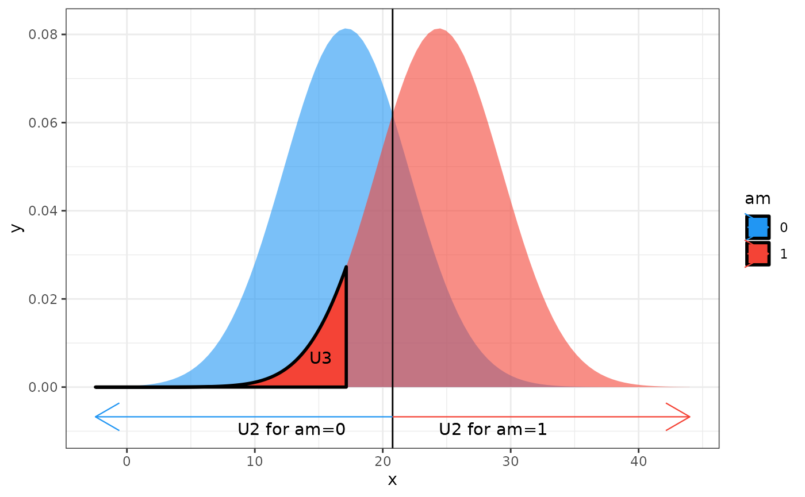

This vignette provides a short review of effect sizes for common
hypothesis tests (in R these are usually
achieved with various *.test() functions).
In most cases, the effect sizes can be automagically extracted from
the htest object via the effectsize()
function.
Standardized Differences
For t-tests, it is common to report an effect size representing a standardized difference between the two compared samples’ means. These measures range from \(-\infty\) to \(+\infty\), with negative values indicating the second group’s mean is larger (and vice versa).
Two Independent Samples
For two independent samples, the difference between the means is standardized based on the pooled standard deviation of both samples (assumed to be equal in the population):
t.test(mpg ~ am, data = mtcars, var.equal = TRUE)>
> Two Sample t-test
>
> data: mpg by am
> t = -4, df = 30, p-value = 3e-04
> alternative hypothesis: true difference in means between group 0 and group 1 is not equal to 0
> 95 percent confidence interval:
> -10.85 -3.64
> sample estimates:
> mean in group 0 mean in group 1
> 17.1 24.4
cohens_d(mpg ~ am, data = mtcars)> Cohen's d | 95% CI
> --------------------------
> -1.48 | [-2.27, -0.67]
>
> - Estimated using pooled SD.Hedges’ g provides a bias correction for small sample sizes (\(N < 20\)).
hedges_g(mpg ~ am, data = mtcars)> Hedges' g | 95% CI
> --------------------------
> -1.44 | [-2.21, -0.65]
>
> - Estimated using pooled SD.If variances cannot be assumed to be equal, it is possible to get estimates that are not based on the pooled standard deviation:
t.test(mpg ~ am, data = mtcars, var.equal = FALSE)>
> Welch Two Sample t-test
>
> data: mpg by am
> t = -4, df = 18, p-value = 0.001
> alternative hypothesis: true difference in means between group 0 and group 1 is not equal to 0
> 95 percent confidence interval:
> -11.28 -3.21
> sample estimates:
> mean in group 0 mean in group 1
> 17.1 24.4
cohens_d(mpg ~ am, data = mtcars, pooled_sd = FALSE)> Cohen's d | 95% CI
> --------------------------
> -1.41 | [-2.26, -0.53]
>
> - Estimated using un-pooled SD.
hedges_g(mpg ~ am, data = mtcars, pooled_sd = FALSE)> Hedges' g | 95% CI
> --------------------------
> -1.35 | [-2.17, -0.51]
>
> - Estimated using un-pooled SD.In cases where the differences between the variances are substantial, it is also common to standardize the difference based only on the standard deviation of one of the groups (usually the “control” group); this effect size is known as Glass’ \(\Delta\) (delta) (Note that the standard deviation is taken from the second sample).
glass_delta(mpg ~ am, data = mtcars)> Glass' delta | 95% CI
> -----------------------------
> -1.17 | [-1.93, -0.39]For a one-sided hypothesis, it is also possible to construct one-sided confidence intervals:
t.test(mpg ~ am, data = mtcars, var.equal = TRUE, alternative = "less")>
> Two Sample t-test
>
> data: mpg by am
> t = -4, df = 30, p-value = 1e-04
> alternative hypothesis: true difference in means between group 0 and group 1 is less than 0
> 95 percent confidence interval:
> -Inf -4.25
> sample estimates:
> mean in group 0 mean in group 1
> 17.1 24.4
cohens_d(mpg ~ am, data = mtcars, pooled_sd = TRUE, alternative = "less")> Cohen's d | 95% CI
> -------------------------
> -1.48 | [-Inf, -0.80]
>
> - Estimated using pooled SD.
> - One-sided CIs: lower bound fixed at [-Inf].Common Language Effect Sizes
Related effect sizes are the common language effect sizes which present information about group differences in terms of probability.
First, we have the (non)overlap measures: Cohen’s \(U_1\) is the proportion of the total of both distributions that does not overlap, while Overlap (OVL) is the proportional overlap between the distributions.
cohens_u1(mpg ~ am, data = mtcars)> Cohen's U1 | 95% CI
> -------------------------
> 0.70 | [0.42, 0.85]
p_overlap(mpg ~ am, data = mtcars)> Overlap | 95% CI
> ----------------------
> 0.46 | [0.26, 0.74]We also probabilistic measures:
Probability of superiority is the probability that, when sampling an observation from each of the groups at random, that the observation from the second group will be larger than the sample from the first group.
p_superiority(mpg ~ am, data = mtcars)> Pr(superiority) | 95% CI
> ------------------------------
> 0.15 | [0.05, 0.32]Here, this indicates that if we were to randomly draw a sample from
am==0 and from am==1, 15% of the time, the
first will have a larger mpg values than the second.
Cohen’s \(U_2\) is the proportion of one of the groups that exceeds the same proportion in the other group, and Cohen’s \(U_3\) is the proportion of the second group that is smaller than the median of the first group.
cohens_u2(mpg ~ am, data = mtcars)> Cohen's U2 | 95% CI
> -------------------------
> 0.77 | [0.63, 0.87]
cohens_u3(mpg ~ am, data = mtcars)> Cohen's U3 | 95% CI
> -------------------------
> 0.07 | [0.01, 0.25]
One Sample and Paired Samples
In the case of a one-sample test, the effect size represents the standardized distance of the mean of the sample from the null value. For paired-samples, the difference between the paired samples is used:
t.test(extra ~ group, data = sleep, paired = TRUE)>
> Paired t-test
>
> data: extra by group
> t = -4, df = 9, p-value = 0.003
> alternative hypothesis: true mean difference is not equal to 0
> 95 percent confidence interval:
> -2.46 -0.70
> sample estimates:
> mean difference
> -1.58
cohens_d(extra ~ group, data = sleep, paired = TRUE)> Cohen's d | 95% CI
> --------------------------
> -1.28 | [-2.12, -0.41]
hedges_g(extra ~ group, data = sleep, paired = TRUE)> Hedges' g | 95% CI
> --------------------------
> -1.17 | [-1.94, -0.38]For a Bayesian t-test
(BFt <- ttestBF(mtcars$mpg[mtcars$am == 0], mtcars$mpg[mtcars$am == 1]))> Bayes factor analysis
> --------------
> [1] Alt., r=0.707 : 86.6 ±0%
>
> Against denominator:
> Null, mu1-mu2 = 0
> ---
> Bayes factor type: BFindepSample, JZS
effectsize(BFt, test = NULL)> Cohen's d | 95% CI
> --------------------------
> -1.29 | [-2.11, -0.52]One way ANOVA
For more details, see ANOVA vignette.
onew <- oneway.test(mpg ~ gear, data = mtcars, var.equal = TRUE)
eta_squared(onew)> # Effect Size for ANOVA
>
> Eta2 | 95% CI
> -------------------
> 0.43 | [0.18, 1.00]
>
> - One-sided CIs: upper bound fixed at [1.00].Contingency Tables
2-by-2 Tables
For 2-by-2 contingency tables, \(\phi\) (Phi) is homologous (though directionless) to the bi-serial correlation between the two dichotomous variables, with 0 representing no association, and 1 representing a perfect association. A “cousin” effect size is Pearson’s contingency coefficient.
> Phi | 95% CI
> -------------------
> 0.62 | [0.33, 1.00]
>
> - One-sided CIs: upper bound fixed at [1.00].
# Same as:
cor(mtcars$mpg < 20, mtcars$vs)> [1] -0.619
pearsons_c(MPG_Gear)> Pearson's C | 95% CI
> --------------------------
> 0.53 | [0.31, 1.00]
>
> - One-sided CIs: upper bound fixed at [1.00].(Cramer’s V or Cohen’s w can also be used, but for 2-by-2 tables, they are equivalent to \(\phi\).)
In addition to \(\phi\) and Pearson’s C, we can also compute the Odds-ratio (OR), where each column represents a different group. Values larger than 1 indicate that the odds are higher in the first group (and vice versa).
(RCT <- matrix(
c(
71, 30,
50, 100
),
nrow = 2, byrow = TRUE,
dimnames = list(
Diagnosis = c("Sick", "Recovered"),
Group = c("Treatment", "Control")
)
))> Group
> Diagnosis Treatment Control
> Sick 71 30
> Recovered 50 100
chisq.test(RCT) # or fisher.test(RCT)>
> Pearson's Chi-squared test with Yates' continuity correction
>
> data: RCT
> X-squared = 32, df = 1, p-value = 2e-08
oddsratio(RCT)> Odds ratio | 95% CI
> -------------------------
> 4.73 | [2.74, 8.17]We can also compute the Risk-ratio (RR), which is the ratio between the proportions of the two groups - a measure which some claim is more intuitive.
riskratio(RCT)> Risk ratio | 95% CI
> -------------------------
> 2.54 | [1.87, 3.45]Additionally, Cohen’s h can also be computed, which uses the arcsin transformation. Negative values indicate smaller proportion in the first group (and vice versa).
cohens_h(RCT)> Cohen's h | 95% CI
> ------------------------
> 0.74 | [0.50, 0.99]Larger Tables
For larger contingency tables Cramér’s V, Cohen’s w and Pearson’s C can be used. While Cramér’s V and Pearson’s C are capped at 1 (perfect association), Cohen’s w can be larger than 1 (for all three, 0 indicates no association between the variables).
(Music <- matrix(
c(
150, 130, 35, 55,
100, 50, 10, 40,
165, 65, 2, 25
),
byrow = TRUE, nrow = 3,
dimnames = list(
Study = c("Psych", "Econ", "Law"),
Music = c("Pop", "Rock", "Jazz", "Classic")
)
))> Music
> Study Pop Rock Jazz Classic
> Psych 150 130 35 55
> Econ 100 50 10 40
> Law 165 65 2 25
chisq.test(Music)>
> Pearson's Chi-squared test
>
> data: Music
> X-squared = 52, df = 6, p-value = 2e-09
cramers_v(Music)> Cramer's V | 95% CI
> -------------------------
> 0.18 | [0.13, 1.00]
>
> - One-sided CIs: upper bound fixed at [1.00].
cohens_w(Music)> Cohen's w | 95% CI
> ------------------------
> 0.25 | [0.18, 1.41]
>
> - One-sided CIs: upper bound fixed at [1.41~].
pearsons_c(Music)> Pearson's C | 95% CI
> --------------------------
> 0.24 | [0.18, 1.00]
>
> - One-sided CIs: upper bound fixed at [1.00].These can also be extracted from the equivalent Bayesian test:
(BFX <- contingencyTableBF(Music, sampleType = "jointMulti"))> Bayes factor analysis
> --------------
> [1] Non-indep. (a=1) : 10053377 ±0%
>
> Against denominator:
> Null, independence, a = 1
> ---
> Bayes factor type: BFcontingencyTable, joint multinomial
effectsize(BFX, type = "cramers_v", test = NULL)> Cramer's V | 95% CI
> -------------------------
> 0.18 | [0.14, 0.22]
effectsize(BFX, type = "cohens_w", test = NULL)> Cohen's w | 95% CI
> ------------------------
> 0.26 | [0.19, 0.32]
effectsize(BFX, type = "pearsons_c", test = NULL)> Pearson's C | 95% CI
> --------------------------
> 0.25 | [0.19, 0.30]Goodness-of-Fit
Cohen’s w and Pearson’s C are also applicable to tests of goodness-of-fit, where small values indicate no deviation from the hypothetical probabilities and large values indicate… large deviation from the hypothetical probabilities.
O <- c(89, 37, 130, 28, 2) # observed group sizes
E <- c(.40, .20, .20, .15, .05) # expected group freq
chisq.test(O, p = E)>
> Chi-squared test for given probabilities
>
> data: O
> X-squared = 121, df = 4, p-value <2e-16
pearsons_c(O, p = E)> Pearson's C | 95% CI
> --------------------------
> 0.55 | [0.48, 1.00]
>
> - One-sided CIs: upper bound fixed at [1.00].
cohens_w(O, p = E)> Cohen's w | 95% CI
> -----------------------
> 0.65 | [0.54, Inf]
>
> - One-sided CIs: upper bound fixed at [Inf].However, Cohen’s w does not account for the distribution of expected probabilities, and as such may be seen is an inflated effect size, and since it can be larger than 1 it is also harder to interpret. For these reasons, we recommend the \(פ\) (Fei) coefficient, which adjusted Cohen’s w to account for the expected distribution of probabilities, making it range between 0 (observed distribution matches the expected distribution perfectly) and 1 (the observed distribution is maximally different than the expected one).
fei(O, p = E)> Fei | 95% CI
> -------------------
> 0.15 | [0.13, 1.00]
>
> - Adjusted for non-uniform expected probabilities.
> - One-sided CIs: upper bound fixed at [1.00].Paired Contingency Tables
For dependent (paired) contingency tables, Cohen’s g represents the symmetry of the table, ranging between 0 (perfect symmetry) and 0.5 (perfect asymmetry).
(Performance <- matrix(
c(
794, 86,
150, 570
),
nrow = 2, byrow = TRUE,
dimnames = list(
"1st Survey" = c("Approve", "Disapprove"),
"2nd Survey" = c("Approve", "Disapprove")
)
))> 2nd Survey
> 1st Survey Approve Disapprove
> Approve 794 86
> Disapprove 150 570
mcnemar.test(Performance)>
> McNemar's Chi-squared test with continuity correction
>
> data: Performance
> McNemar's chi-squared = 17, df = 1, p-value = 4e-05
cohens_g(Performance)> Cohen's g | 95% CI
> ------------------------
> 0.14 | [0.07, 0.19]Rank Based tests
Rank based tests get rank based effect sizes!
Difference in Ranks
For two independent samples, the rank-biserial correlation (\(r_{rb}\)) is a measure of relative superiority - i.e., larger values indicate a higher probability of a randomly selected observation from X being larger than randomly selected observation from Y. A value of \((-1)\) indicates that all observations in the second group are larger than the first, and a value of \((+1)\) indicates that all observations in the first group are larger than the second.
A <- c(48, 48, 77, 86, 85, 85)
B <- c(14, 34, 34, 77)
wilcox.test(A, B) # aka Mann–Whitney U test>
> Wilcoxon rank sum test with continuity correction
>
> data: A and B
> W = 22, p-value = 0.05
> alternative hypothesis: true location shift is not equal to 0
rank_biserial(A, B)> r (rank biserial) | 95% CI
> --------------------------------
> 0.79 | [0.30, 0.95]Here too we have a common language effect size:
p_superiority(A, B, parametric = FALSE)> Pr(superiority) | 95% CI
> ------------------------------
> 0.90 | [0.65, 0.98]
>
> - Non-parametric CLES
cohens_u3(A, B, parametric = FALSE)> Cohen's U3 | 95% CI
> -------------------------
> 1.00 | [0.33, 1.00]
>
> - Non-parametric CLES
# and more...For one sample, \(r_{rb}\) measures the symmetry around \(\mu\) (mu; the null value), with 0 indicating perfect symmetry, \((-1)\) indicates that all observations fall below \(\mu\), and \((+1)\) indicates that all observations fall above \(\mu\). For paired samples the difference between the paired samples is used:
x <- c(1.15, 0.88, 0.90, 0.74, 1.21, 1.36, 0.89)
wilcox.test(x, mu = 1) # aka Signed-Rank test>
> Wilcoxon signed rank exact test
>
> data: x
> V = 16, p-value = 0.8
> alternative hypothesis: true location is not equal to 1
rank_biserial(x, mu = 1)> r (rank biserial) | 95% CI
> ---------------------------------
> 0.14 | [-0.59, 0.75]
>
> - Deviation from a difference of 1.
x <- c(1.83, 0.50, 1.62, 2.48, 1.68, 1.88, 1.55, 3.06, 1.30)
y <- c(0.878, 0.647, 0.598, 2.05, 1.06, 1.29, 1.06, 3.14, 1.29)
wilcox.test(x, y, paired = TRUE) # aka Signed-Rank test>
> Wilcoxon signed rank exact test
>
> data: x and y
> V = 40, p-value = 0.04
> alternative hypothesis: true location shift is not equal to 0
rank_biserial(x, y, paired = TRUE)> r (rank biserial) | 95% CI
> --------------------------------
> 0.78 | [0.30, 0.94]Rank One way ANOVA
The Rank-Epsilon-Squared (\(\varepsilon^2\)) is a measure of association for the rank based one-way ANOVA. Values range between 0 (no relative superiority between any of the groups) to 1 (complete separation - with no overlap in ranks between the groups).
group_data <- list(
g1 = c(2.9, 3.0, 2.5, 2.6, 3.2), # normal subjects
g2 = c(3.8, 2.7, 4.0, 2.4), # with obstructive airway disease
g3 = c(2.8, 3.4, 3.7, 2.2, 2.0) # with asbestosis
)
kruskal.test(group_data)>
> Kruskal-Wallis rank sum test
>
> data: group_data
> Kruskal-Wallis chi-squared = 0.8, df = 2, p-value = 0.7
rank_epsilon_squared(group_data)> Epsilon2 (rank) | 95% CI
> ------------------------------
> 0.06 | [0.02, 1.00]
>
> - One-sided CIs: upper bound fixed at [1.00].Rank One way Repeated-Measures ANOVA
For a rank based repeated measures one-way ANOVA, Kendall’s W is a measure of agreement on the effect of condition between various “blocks” (the subjects), or more often conceptualized as a measure of reliability of the rating / scores of observations (or “groups”) between “raters” (“blocks”).
# Subjects are COLUMNS
(ReactionTimes <- matrix(
c(
398, 338, 520,
325, 388, 555,
393, 363, 561,
367, 433, 470,
286, 492, 536,
362, 475, 496,
253, 334, 610
),
nrow = 7, byrow = TRUE,
dimnames = list(
paste0("Subject", 1:7),
c("Congruent", "Neutral", "Incongruent")
)
))> Congruent Neutral Incongruent
> Subject1 398 338 520
> Subject2 325 388 555
> Subject3 393 363 561
> Subject4 367 433 470
> Subject5 286 492 536
> Subject6 362 475 496
> Subject7 253 334 610
friedman.test(ReactionTimes)>
> Friedman rank sum test
>
> data: ReactionTimes
> Friedman chi-squared = 11, df = 2, p-value = 0.004
kendalls_w(ReactionTimes)> Kendall's W | 95% CI
> --------------------------
> 0.80 | [0.76, 1.00]
>
> - One-sided CIs: upper bound fixed at [1.00].